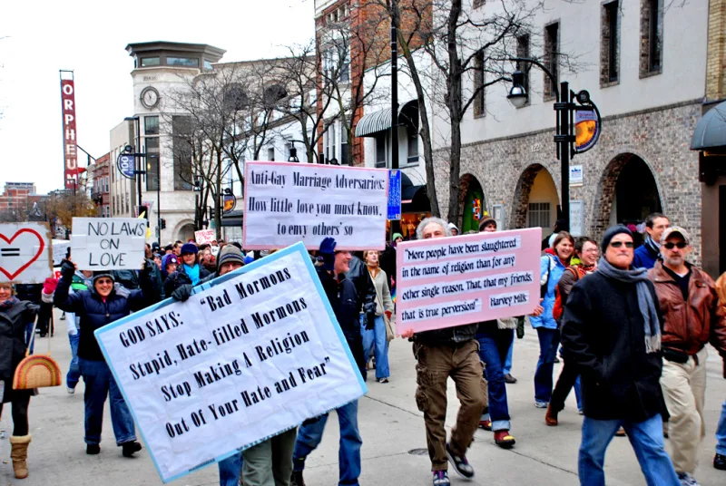
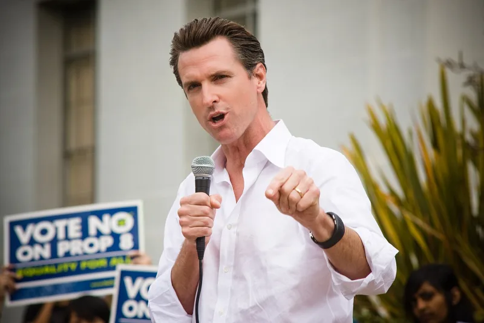

Proposition 8: every pulpit, and $20 million
AdmittedTheir own church publications admit these facts. You can make this point from LDS sources alone.
What the church did in 2008
On 29 June the First Presidency had a letter read from every California pulpit. It urged members to "do all you can" — their "means and time" — to pass Proposition 8.
That measure stripped same-sex marriage out of California law.
How it was organised
Ward and stake structures became a precinct operation. Assigned donation targets.
Phone banks. Door-to-door canvassing.
All coordinated with the Protect Marriage coalition, which the church joined at the invitation of the Catholic Archbishop Niederauer.
The numbers
Members gave an estimated $20 million, roughly half the funds of the Yes campaign. Latter-day Saints were about 2% of Californians.
The church reported in-kind contributions, and was later fined by the California Fair Political Practices Commission for reporting them late. The same playbook had run in Hawaii in 1998, and on Proposition 22 in 2000.
Their answer, at full strength
That churches have always had the right, and a duty, to speak on moral questions. Marriage is a moral question, not a partisan one, and the church endorsed no candidate or party.
It joined a broad interfaith coalition — Catholics, evangelicals, Orthodox Jews, Muslims — rather than acting alone. Direct institutional spending was small and disclosed.
Members gave freely as private citizens. And D&C 134 also says governments should protect freedom of conscience.
How strong is this argument?
They admit the facts, and their answer justifies the involvement rather than denying it. Be careful here.
Christians themselves disagree about religious political advocacy, so the general charge will not land. Two narrower things do.
D&C 134:9 says "we do not believe it just to mingle religious influence with civil government." And the pattern goes mobilise, then soften — Proposition 8, then the 2015 policy, then the 2019 reversal, then support for the 2022 Respect for Marriage Act.
What to say
"How do you read D&C 134:9 against what happened in 2008?"



How they answer this — at its strongest
Churches may speak on moral questions, and members gave freely as private citizens.
The church's Newsroom and FAIR respond that churches have always had the right, and a duty, to speak on moral questions. Marriage is a moral question, not partisan politics.
The church endorsed no candidate and no party. It joined a broad interfaith coalition rather than acting alone. Catholics, evangelicals, Orthodox Jews and Muslims were in it.
Direct institutional spending was a small, disclosed, in-kind amount. Members donated freely, as private citizens.
And D&C 134 also says governments should protect the free exercise of conscience. That, the church argues, is what it was doing.
The verdict
They admit the facts: press D&C 134:9, not the general charge.
The facts are documented and not denied. The First Presidency letter of 29 June 2008. The fundraising through church channels. The roughly $20 million from members, about half the Yes campaign's funds. And the FPPC fine for late reporting.
The defence justifies the involvement rather than disputing it, so the substance is admitted.
Whether religious political advocacy is wrong is a judgement Christians themselves divide over. So the force here is narrower. It lies in the mismatch with D&C 134:9. And it lies in the pattern of mobilise, then soften. Proposition 8, the 2015 exclusion policy, the 2019 reversal, then the 2022 Respect for Marriage Act.
Sources
- Church Newsroom: Same-Sex Marriage and Proposition 8
- Thomas Jefferson School of Law: An Overview of LDS Involvement in Prop 8
- George Washington Law Review: Proposition 8 and the Mormon Church — A Case Study in Donor Disclosure
- Religion Dispatches: When Mormons Mobilize
- FAIR: Mormonism and politics — California Proposition 8